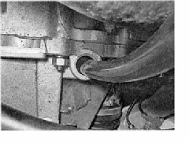

Проверка уровня и замена масла в коробке передачУровень масла в коробке передач проверяем при техническом обслуживании автомобиля, а также перед каждой поездкой при утечке масла из коробки. Для выполнения работы потребуются: смотровая канава или эстакада; — широкая емкость объемом не менее 4 литров; — воронка со шлангом. Проверка Проверку проводим при неработающем двигателе. 1. Подготавливаем автомобиль к выполнению работы. 2. Снимаем корпус воздушного фильтра. 3. Извлекаем указатель уровня масла из отверстия в картере коробки передач. 4. Протираем стержень указателя от масла и снова устанавливаем его на место до упора, после чего вынимаем. Уровень масла в коробке передач должен находиться между метками MIN и МАХ, нанесенными на стержне указателя, в противном случае уровень доводим до нормы. 5. Устанавливаем указатель уровня и воздушный фильтр на место. Замена Масло в коробке передач заменяем через 75 000 км пробега либо через пять лет эксплуатации, в зависимости от того, что наступит раньше. Тип применяемого масла указан в разделе «Справочные данные». Совет Масло лучше менять сразу после поездки, пока оно горячее, так масло быстрее и полнее сливается вместе со взвешенными частицами износа. Температура разогретого масла может достигать 90 °С, будьте осторожны. 1. Подготавливаем автомобиль к выполнению работы 2. Устанавливаем под сливное отверстие картера коробки передач емкость. 3. Накидным ключом на 17 мм отворачиваем пробку сливного отверстия. 4. Сливаем масло. 5. Дождавшись полного слива масла из коробки, заворачиваем пробку на место. Совет Если слитое из коробки передач масло темного цвета и в нем заметны металлические частицы, коробку следует промыть. Для этого залейте в картер коробки 1—1,5л специального промывочного масла. Вывесив одно из ведущих колес, запустите двигатель и включите первую передачу. Через 5-7мин выключите двигатель, слейте промывочное масло и залейте чистое трансмиссионное. 6. Вынимаем указатель уровня масла. 7. Протираем указатель, удаляя с него масло. 8. Заправляем нижний конец шланга в отверстие указателя уровня масла. 
9. В верхний конец шланга вставляем воронку. 10. Через воронку заливаем в коробку передач 3,1 л трансмиссионного масла. Уровень масла в коробке контролируем по указателю. 11. по окончании работ ветошью удаляем подтеки масла и устанавливаем указатель уровня масла на место. |